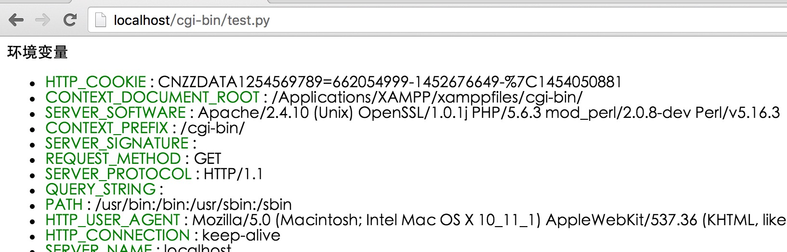
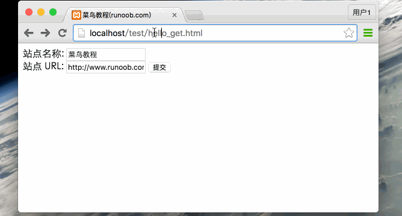
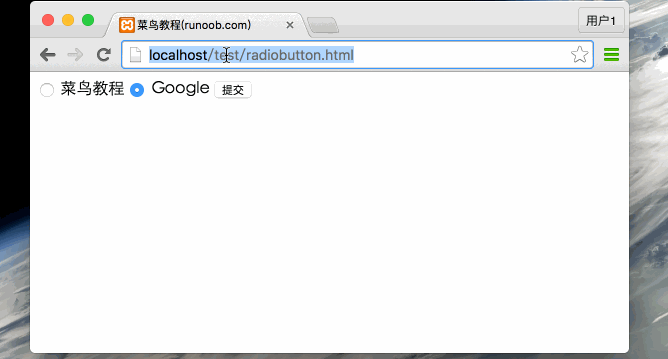
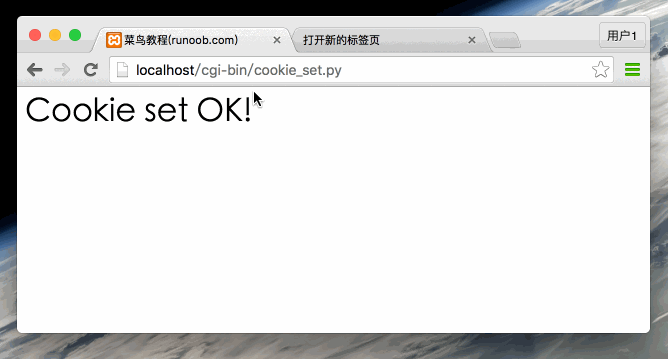

Python CGI Programming
What is CGI?
CGI is currently maintained by NCSA, and NCSA defines CGI as follows:
CGI (Common Gateway Interface) is a program that runs on a server, such as an HTTP server, providing an interface with client HTML pages.
Note:
Starting from Python 3.11, the cgi module is officially marked as "Deprecated" and has been removed starting from Python 3.13.
It is recommended to migrate toFlask、Django 或 FastAPIand other modern Web frameworks.
Web Browsing
To better understand how CGI works, we can look at the process of clicking a link or URL on a web page:
- 1. Use your browser to access the URL and connect to the HTTP web server.
- 2. After receiving the request information, the Web server parses the URL and checks whether the accessed file exists on the server. If it exists, it returns the file content; otherwise, it returns an error message.
- 3. The browser receives the information from the server and displays the received file or error message.
CGI programs can be Python scripts, Perl scripts, Shell scripts, C or C++ programs, etc.
CGI Architecture Diagram

Web Server Support and Configuration
Before you start CGI programming, make sure your Web server supports CGI and has the CGI handler configured.
Apache supports CGI configuration:
Set up the CGI directory:
ScriptAlias /cgi-bin/ /var/www/cgi-bin/
The CGI programs executed by all HTTP servers are stored in a pre-configured directory. This directory is called the CGI directory, and by convention, it is named /var/www/cgi-bin.
The file extension for CGI is.cgi, Python can also use the.py.py extension.
By default, the cgi-bin directory configured to run on Linux servers is /var/www.
If you want to specify another directory for running CGI scripts, you can modify the httpd.conf configuration file as follows:
<Directory "/var/www/cgi-bin"> AllowOverride None Options +ExecCGI Order allow,deny Allow from all </Directory>
Add the .py suffix in AddHandler, so that we can access Python script files ending with .py:
AddHandler cgi-script .cgi .pl .py
First CGI Program
We use Python to create our first CGI program, named hello.py, located in the /var/www/cgi-bin directory, with the following content:
#!/usr/bin/python # -*- coding: UTF-8 -*- print "Content-type:text/html" print # 空行，告诉服务器结束头部 print '<html>' print '<head>' print '<meta charset="utf-8">' print '<title>Hello World - 我的第一个 CGI 程序！</title>' print '</head>' print '<body>' print '<h2>Hello World! 我是来自菜鸟教程的第一CGI程序</h2>' print '</body>' print '</html>'
After saving the file, modify hello.py and change its file permissions to 755:
chmod 755 hello.py
Access the above program in the browser athttp://localhost/cgi-bin/hello.pyThe displayed result is as follows:
Hello World! 我是来自菜鸟教程的第一CGI程序
This hello.py script is a simple Python script. The output "Content-type:text/html" on the first line of the script is sent to the browser and tells the browser that the type of content to display is "text/html".
Use print to output a blank line to tell the server that the header information is finished.
HTTP Header
The "Content-type:text/html" in the hello.py file content is part of the HTTP header. It is sent to the browser to tell the browser the content type of the file.
The format of the HTTP header is as follows:
HTTP 字段名: 字段内容
For example:
Content-type: text/html
The following table describes the information commonly used in HTTP headers in CGI programs:
| 头 | Description |
|---|---|
| Content-type: | The MIME information corresponding to the requested entity. For example: Content-type:text/html |
| Expires: Date | The date and time at which the response expires |
| Location: URL | Used to redirect the receiver to a location other than the requested URL to complete the request or identify a new resource |
| Last-modified: Date | The last modified time of the requested resource |
| Content-length: N | The content length of the request |
| Set-Cookie: String | Set Http Cookie |
CGI Environment Variables
All CGI programs receive the following environment variables, which play an important role in CGI programs:
| Variable Name | Description |
|---|---|
| CONTENT_TYPE | The value of this environment variable indicates the MIME type of the information passed. Currently, the CONTENT_TYPE environment variable is generally: application/x-www-form-urlencoded, which indicates that the data comes from an HTML form. |
| CONTENT_LENGTH | If the server and CGI program communicate using the POST method, this environment variable is the number of bytes of valid data that can be read from standard input STDIN. This environment variable must be used when reading the input data. |
| HTTP_COOKIE | The COOKIE content in the client. |
| HTTP_USER_AGENT | Provides client browser information including version numbers or other proprietary data. |
| PATH_INFO | The value of this environment variable represents additional path information immediately following the CGI program name. It often appears as a parameter to the CGI program. |
| QUERY_STRING | If the server and CGI program communicate using the GET method, the value of this environment variable is the information passed. This information follows the CGI program name, separated by a question mark '?'. |
| REMOTE_ADDR | The value of this environment variable is the IP address of the client making the request, for example 192.168.1.67 above. This value is always present. Moreover, it is the unique identifier that the Web client needs to provide to the Web server, and it can be used in the CGI program to distinguish different Web clients. |
| REMOTE_HOST | The value of this environment variable contains the hostname of the client sending the CGI request. If it does not support the query you want to make, this environment variable need not be defined. |
| REQUEST_METHOD | Provides the method by which the script is called. For scripts using the HTTP/1.0 protocol, only GET and POST are meaningful. |
| SCRIPT_FILENAME | The full path of the CGI script |
| SCRIPT_NAME | The name of the CGI script |
| SERVER_NAME | This is the hostname, alias, or IP address of your WEB server. |
| SERVER_SOFTWARE | The value of this environment variable contains the name and version number of the HTTP server that calls the CGI program. For example, the value above is Apache/2.2.14 (Unix). |
The following is a simple CGI script that outputs CGI environment variables:
#!/usr/bin/python
# -*- coding: UTF-8 -*-
# filename:test.py
import os
print "Content-type: text/html"
print
print "<meta charset=\"utf-8\">"
print "<b>环境变量</b><br>";
print "<ul>"
for key in os.environ.keys():
print "<li><span style='color:green'>%30s </span> : %s </li>" % (key,os.environ[key])
print "</ul>"
Save the above code as test.py, and modify the file permissions to 755. The execution result is as follows:

GET and POST Methods
The browser client passes information to the server through two methods, namely the GET method and the POST method.
Using the GET Method to Transfer Data
The GET method sends encoded user information to the server. The data is included in the URL of the requested page, separated by a "?" sign, as shown below:
http://www.test.com/cgi-bin/hello.py?key1=value1&key2=value2Some other notes about GET requests:
- GET requests can be cached
- GET requests remain in browser history
- GET requests can be bookmarked
- GET requests should not be used when processing sensitive data
- GET requests have a length limit
- GET requests should only be used to retrieve data
Simple URL Example: GET Method
The following is a simple URL that uses the GET method to send two parameters to the hello_get.py program:
/cgi-bin/test.py?name=菜鸟教程&url=http://www.runoob.com
The following is the code for the hello_get.py file:
#!/usr/bin/python
# -*- coding: UTF-8 -*-
# filename：test.py
# CGI处理模块
import cgi, cgitb
# 创建 FieldStorage 的实例化
form = cgi.FieldStorage()
# 获取数据
site_name = form.getvalue('name')
site_url = form.getvalue('url')
print "Content-type:text/html"
print
print "<html>"
print "<head>"
print "<meta charset=\"utf-8\">"
print "<title>菜鸟教程 CGI 测试实例</title>"
print "</head>"
print "<body>"
print "<h2>%s官网：%s</h2>" % (site_name, site_url)
print "</body>"
print "</html>"
After saving the file, modify hello_get.py and change its file permissions to 755:
chmod 755 hello_get.py
The browser request output result is:

Simple Form Example: GET Method
The following is an HTML form that uses the GET method to send two data items to the server. The server script for submission is also the hello_get.py file. The hello_get.html code is as follows:
<!DOCTYPE html> <html> <head> <meta charset="utf-8"> <title>菜鸟教程(runoob.com)</title> </head> <body> <form action="../cgi-bin/hello_get.py" method="get"> 站点名称: <input type="text" name="name"> <br /> 站点 URL: <input type="text" name="url" /> <input type="submit" value="提交" /> </form> </body> </html>
By default, the cgi-bin directory can only store script files. We store hello_get.html in the test directory and change the file permissions to 755:
chmod 755 hello_get.html
The Gif demonstration is shown below:

Using the POST Method to Transfer Data
Using the POST method to pass data to the server is safer and more reliable. Sensitive information such as user passwords needs to be transmitted using POST.
The following is also hello_get.py, which can also handle POST form data submitted by the browser:
#!/usr/bin/python
# -*- coding: UTF-8 -*-
# CGI处理模块
import cgi, cgitb
# 创建 FieldStorage 的实例化
form = cgi.FieldStorage()
# 获取数据
site_name = form.getvalue('name')
site_url = form.getvalue('url')
print "Content-type:text/html"
print
print "<html>"
print "<head>"
print "<meta charset=\"utf-8\">"
print "<title>菜鸟教程 CGI 测试实例</title>"
print "</head>"
print "<body>"
print "<h2>%s官网：%s</h2>" % (site_name, site_url)
print "</body>"
print "</html>"
The following form uses the POST method (method="post") to submit data to the server script hello_get.py:
<!DOCTYPE html> <html> <head> <meta charset="utf-8"> <title>菜鸟教程(runoob.com)</title> </head> <body> <form action="../cgi-bin/hello_get.py" method="post"> 站点名称: <input type="text" name="name"> <br /> 站点 URL: <input type="text" name="url" /> <input type="submit" value="提交" /> </form> </body> </html>
The Gif demonstration is shown below:

Passing Checkbox Data Through a CGI Program
Checkbox is used to submit data for one or more options. The HTML code is as follows:
<!DOCTYPE html> <html> <head> <meta charset="utf-8"> <title>菜鸟教程(runoob.com)</title> </head> <body> <form action="../cgi-bin/checkbox.py" method="POST" target="_blank"> <input type="checkbox" name="runoob" value="on" /> 菜鸟教程 <input type="checkbox" name="google" value="on" /> Google <input type="submit" value="选择站点" /> </form> </body> </html>
The following is the code of the checkbox.py file:
#!/usr/bin/python
# -*- coding: UTF-8 -*-
# 引入 CGI 处理模块
import cgi, cgitb
# 创建 FieldStorage的实例
form = cgi.FieldStorage()
# 接收字段数据
if form.getvalue('google'):
google_flag = "是"
else:
google_flag = "否"
if form.getvalue('runoob'):
runoob_flag = "是"
else:
runoob_flag = "否"
print "Content-type:text/html"
print
print "<html>"
print "<head>"
print "<meta charset=\"utf-8\">"
print "<title>菜鸟教程 CGI 测试实例</title>"
print "</head>"
print "<body>"
print "<h2> 菜鸟教程是否选择了 : %s</h2>" % runoob_flag
print "<h2> Google 是否选择了 : %s</h2>" % google_flag
print "</body>"
print "</html>"
Change the permissions of checkbox.py:
chmod 755 checkbox.py
Browser access Gif demonstration:

Passing Radio Data Through a CGI Program
Radio only passes one piece of data to the server. The HTML code is as follows:
<!DOCTYPE html> <html> <head> <meta charset="utf-8"> <title>菜鸟教程(runoob.com)</title> </head> <body> <form action="../cgi-bin/radiobutton.py" method="post" target="_blank"> <input type="radio" name="site" value="runoob" /> 菜鸟教程 <input type="radio" name="site" value="google" /> Google <input type="submit" value="提交" /> </form> </body> </html>
The radiobutton.py script code is as follows:
#!/usr/bin/python
# -*- coding: UTF-8 -*-
# 引入 CGI 处理模块
import cgi, cgitb
# 创建 FieldStorage的实例
form = cgi.FieldStorage()
# 接收字段数据
if form.getvalue('site'):
site = form.getvalue('site')
else:
site = "提交数据为空"
print "Content-type:text/html"
print
print "<html>"
print "<head>"
print "<meta charset=\"utf-8\">"
print "<title>菜鸟教程 CGI 测试实例</title>"
print "</head>"
print "<body>"
print "<h2> 选中的网站是 %s</h2>" % site
print "</body>"
print "</html>"
Change the permissions of radiobutton.py:
chmod 755 radiobutton.py
Browser access Gif demonstration:

Passing Textarea Data Through a CGI Program
Textarea passes multi-line data to the server. The HTML code is as follows:
<!DOCTYPE html> <html> <head> <meta charset="utf-8"> <title>菜鸟教程(runoob.com)</title> </head> <body> <form action="../cgi-bin/textarea.py" method="post" target="_blank"> <textarea name="textcontent" cols="40" rows="4"> 在这里输入内容... </textarea> <input type="submit" value="提交" /> </form> </body> </html>
The textarea.py script code is as follows:
#!/usr/bin/python
# -*- coding: UTF-8 -*-
# 引入 CGI 处理模块
import cgi, cgitb
# 创建 FieldStorage的实例
form = cgi.FieldStorage()
# 接收字段数据
if form.getvalue('textcontent'):
text_content = form.getvalue('textcontent')
else:
text_content = "没有内容"
print "Content-type:text/html"
print
print "<html>"
print "<head>";
print "<meta charset=\"utf-8\">"
print "<title>菜鸟教程 CGI 测试实例</title>"
print "</head>"
print "<body>"
print "<h2> 输入的内容是：%s</h2>" % text_content
print "</body>"
print "</html>"
Change the permissions of textarea.py:
chmod 755 textarea.py
Browser access Gif demonstration:

Passing Dropdown Data Through a CGI Program.
The HTML dropdown box code is as follows:
<!DOCTYPE html> <html> <head> <meta charset="utf-8"> <title>菜鸟教程(runoob.com)</title> </head> <body> <form action="../cgi-bin/dropdown.py" method="post" target="_blank"> <select name="dropdown"> <option value="runoob" selected>菜鸟教程</option> <option value="google">Google</option> </select> <input type="submit" value="提交"/> </form> </body> </html>
The dropdown.py script code is as shown below:
#!/usr/bin/python
# -*- coding: UTF-8 -*-
# 引入 CGI 处理模块
import cgi, cgitb
# 创建 FieldStorage的实例
form = cgi.FieldStorage()
# 接收字段数据
if form.getvalue('dropdown'):
dropdown_value = form.getvalue('dropdown')
else:
dropdown_value = "没有内容"
print "Content-type:text/html"
print
print "<html>"
print "<head>"
print "<meta charset=\"utf-8\">"
print "<title>菜鸟教程 CGI 测试实例</title>"
print "</head>"
print "<body>"
print "<h2> 选中的选项是：%s</h2>" % dropdown_value
print "</body>"
print "</html>"
Change the permissions of dropdown.py:
chmod 755 dropdown.py
Browser access Gif demonstration:

Using Cookies in CGI
A big disadvantage of the HTTP protocol is that it does not judge the user's identity, which brings great inconvenience to programmers. The emergence of the Cookie function makes up for this deficiency.
A cookie is a record of data written to the customer's hard drive through the customer's browser when the customer accesses the script. When the customer accesses the script next time, the data information is retrieved, thereby achieving identity discrimination. Cookies are commonly used in identity verification.
Cookie Syntax
The sending of HTTP cookies is implemented through the HTTP header. It precedes the file transmission. The syntax of the Set-Cookie header is as follows:
Set-cookie:name=name;expires=date;path=path;domain=domain;secure
- name=name:The value of the cookie needs to be set (name cannot use ";" and "," sign). When there are multiple name values, use ";" separated, for example:name1=name1;name2=name2;name3=name3。
- expires=date:Cookie validity period, format: expires="Wdy,DD-Mon-YYYY HH:MM:SS"
- path=path: Set the path supported by the cookie. If path is a path, the cookie takes effect for all files and subdirectories under this directory, for example: path="/cgi-bin/". If path is a file, the cookie takes effect only for this file, for example: path="/cgi-bin/cookie.cgi".
- domain=domain:The domain for which the cookie is valid, for example: domain="www.runoob.com"
- secure:If this flag is given, it means the cookie can only be transmitted through an HTTPS server using the SSL protocol.
- The reception of cookies is implemented by setting the environment variable HTTP_COOKIE. The CGI program can obtain cookie information by retrieving this variable.
Cookie Settings
Setting cookies is very simple. The cookie is sent separately in the HTTP header. The following example sets name and expires in the cookie:
#!/usr/bin/python
# -*- coding: UTF-8 -*-
#
print 'Content-Type: text/html'
print 'Set-Cookie: name="菜鸟教程";expires=Wed, 28 Aug 2016 18:30:00 GMT'
print
print """
<html>
<head>
<meta charset="utf-8">
<title>菜鸟教程(runoob.com)</title>
</head>
<body>
<h1>Cookie set OK!</h1>
</body>
</html>
"""
Save the above code to cookie_set.py and change the permissions of cookie_set.py:
chmod 755 cookie_set.py
The above example uses the Set-Cookie header information to set Cookie information. In the options, other Cookie attributes are set, such as expiration time Expires, domain Domain, and path Path. This information is set before "Content-type:text/html".
Retrieving Cookie Information
The Cookie information retrieval page is very simple. Cookie information is stored in the CGI environment variable HTTP_COOKIE. The storage format is as follows:
key1=value1;key2=value2;key3=value3....
The following is a simple CGI program for retrieving cookie information:
#!/usr/bin/python
# -*- coding: UTF-8 -*-
# 导入模块
import os
import Cookie
print "Content-type: text/html"
print
print """
<html>
<head>
<meta charset="utf-8">
<title>菜鸟教程(runoob.com)</title>
</head>
<body>
<h1>读取cookie信息</h1>
"""
if 'HTTP_COOKIE' in os.environ:
cookie_string=os.environ.get('HTTP_COOKIE')
c=Cookie.SimpleCookie()
c.load(cookie_string)
try:
data=c['name'].value
print "cookie data: "+data+"<br>"
except KeyError:
print "cookie 没有设置或者已过期<br>"
print """
</body>
</html>
"""
Save the above code to cookie_get.py and change the permissions of cookie_get.py:
chmod 755 cookie_get.py
The Gif demonstrating the above cookie color setting is as follows:

File Upload Example
The HTML form for uploading files needs to set theenctypeattribute tomultipart/form-data, and the code is as follows:
<!DOCTYPE html>
<html>
<head>
<meta charset="utf-8">
<title>菜鸟教程(runoob.com)</title>
</head>
<body>
<form enctype="multipart/form-data"
action="../cgi-bin/save_file.py" method="post">
<p>选中文件: <input type="file" name="filename" /></p>
<p><input type="submit" value="上传" /></p>
</form>
</body>
</html>
The code of the save_file.py script file is as follows:
#!/usr/bin/python
# -*- coding: UTF-8 -*-
import cgi, os
import cgitb; cgitb.enable()
form = cgi.FieldStorage()
# 获取文件名
fileitem = form['filename']
# 检测文件是否上传
if fileitem.filename:
# 设置文件路径
fn = os.path.basename(fileitem.filename)
open('/tmp/' + fn, 'wb').write(fileitem.file.read())
message = '文件 "' + fn + '" 上传成功'
else:
message = '文件没有上传'
print """\
Content-Type: text/html\n
<html>
<head>
<meta charset="utf-8">
<title>菜鸟教程(runoob.com)</title>
</head>
<body>
<p>%s</p>
</body>
</html>
""" % (message,)
Save the above code to save_file.py and change the permissions of save_file.py:
chmod 755 save_file.py
The Gif demonstrating the above cookie color setting is as follows:

If you are using a Unix/Linux system, you must replace the file separator. On Windows, you only need to use the open() statement:
fn = os.path.basename(fileitem.filename.replace("\\", "/" ))
File Download Dialog
We first create a foo.txt file in the current directory for the program to download.
File download is implemented by setting HTTP header information. The functional code is as follows:
#!/usr/bin/python
# -*- coding: UTF-8 -*-
# HTTP 头部
print "Content-Disposition: attachment; filename=\"foo.txt\"";
print
# 打开文件
fo = open("foo.txt", "rb")
str = fo.read();
print str
# 关闭文件
fo.close()
Other Extensions
Andy
c_h***g@qti.qualcomm.com
Python3.x CGI Chinese garbled text solution:
import codecs, sys sys.stdout = codecs.getwriter('utf8')(sys.stdout.buffer)Andy
c_h***g@qti.qualcomm.com
Soros
341***5870@qq.com
Python3.6 and later versions Chinese garbled text solution:
import codecs, sys sys.stdout = codecs.getwriter("utf-8")(sys.stdout.detach())Soros
341***5870@qq.com